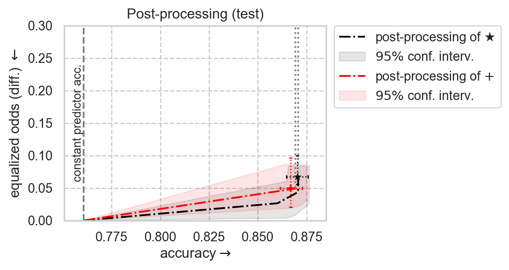

error-parity
Overview
Installation
Quickstart
Concepts
Constraints
Usage: Threshold optimizer
Usage: Postprocessing frontier
Usage: Evaluation
Usage: Plotting
Metrics reference
API reference
Notebooks Gallery
Achieving
equalized odds
on real-world ACS data (ACSIncome)
Fairness vs Performance trade-off
Fit and plot similar example but using “Equal Opportunity” fairness metric
Achieving
equalized odds
on synthetic data
Plot postprocessing Pareto frontier
Achieving different fairness constraints on synthetic data
Plot Fairness-Accuracy Pareto frontier achievable by postprocessing
Example usage of
error-parity
with other fairness-constrained classifiers
FAQ
Glossary
Readme file
error-parity
Notebooks Gallery
View page source
Notebooks Gallery
Achieving equalized odds on real-world ACS data (ACSIncome)
Achieving equalized odds on synthetic data
Achieving different fairness constraints on synthetic data

Example usage of error-parity with other fairness-constrained classifiers